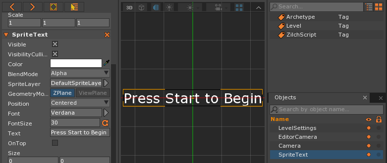
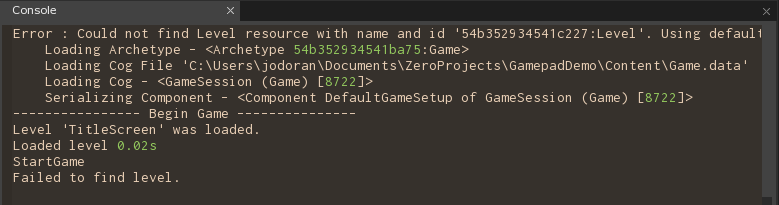
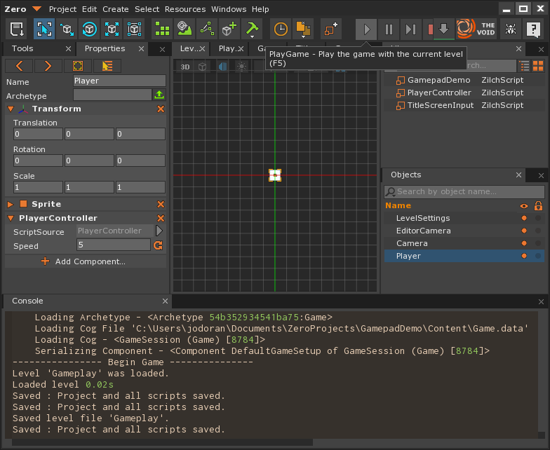
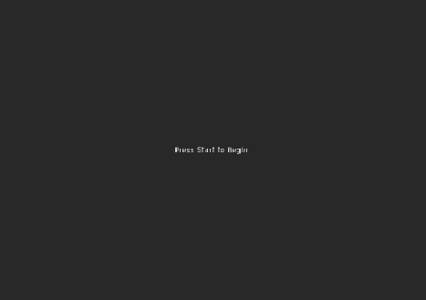
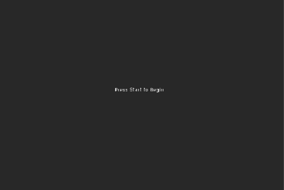
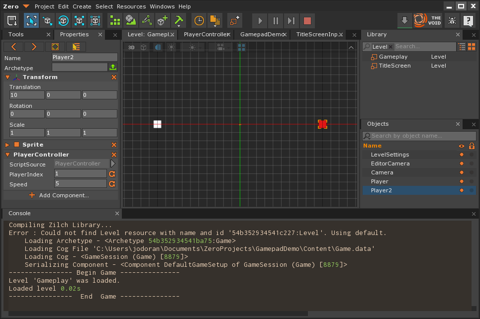

Gamepad
One of the additions that can make your project feel like a quality professional title is support for gamepads. There are certain games that work best with controllers, such as when you want to have multiple players on one monitor. In the following lesson, we will demonstrating the steps required to add controller support for your Zero Engine game.
In the following examples we will be using an Xbox 360 controller, but the principles should work other controllers as well. If you are using an Xbox One controller, the drivers to use them can be found here.
Before we Begin
The first thing that we will need to do is make sure that our Xbox controllers are working and that the proper drivers are installed. Generally wired Xbox 360 controllers should work out of the box, but wireless controllers may require additional drivers which should come with the USB dongle provided with it.
Setup
- Add a new level named: TitleScreen
- Create a text object by going to Create | Create Sprite Text.
- Select the Sprite Text object and change the Position to Centered.
- Once that’s finished change the Text to “Press Start to Begin”

Checking for Gamepad Input
- Add a new ZilchScript resource Named: ‘TitleScreenInput’
class TitleScreenInput : ZilchComponent
{
[Property]
var GameLevel : Level = null;
function Initialize(init : CogInitializer)
{
Zero.Connect(this.Space, Events.LogicUpdate, this.OnLogicUpdate);
}
function OnLogicUpdate(e : UpdateEvent)
{
var gamepad = Zero.Gamepads.GetGamePad(0);
if( gamepad.IsButtonPressed( Buttons.Start ) )
{
Console.WriteLine("StartGame");
this.Space.LoadLevel(this.GameLevel);
}
}
}
- Create an empty game object by going to Create | Create Transform. Give the object a name of “Input”.
- Attach the TitleScreenInput component to the object.
- Save your project and run the game
Of course, we haven’t initialized the GameLevel variable yet so nothing will happen; but if all goes well when you press the Start button you should see it display our console output.

There may be times in which you’d like to just check if any key has been pressed rather than just Start. You can use Buttons.AnyButton instead.
Level 2 Setup
Next, let’s make the level the title screen will go to Gameplay Level
- Add a new level named: Gameplay
- Create a new sprite object by going to Create | Create Sprite. * Rename this sprite to ‘Player’.

Adding Player Movement Using the DPad
Keeping this simple example in mind, we can extend this capability. We want to write a script to control our player. For this first example, let’s use the directional pad (also known as the DPad).
- Add a new ZilchScript resource Named: ‘PlayerController’
class PlayerController : ZilchComponent
{
[Property]
//Modifier on the speed of our player
var Speed : Real = 5.0;
// The gamepad that our player is using
var Controller:Gamepad = null;
function Initialize(init : CogInitializer)
{
this.Controller = Zero.Gamepads.GetGamePad(0);
Zero.Connect(this.Space, Events.LogicUpdate, this.OnLogicUpdate);
}
function OnLogicUpdate(event : UpdateEvent)
{
var movement = local Real3(0.0, 0.0, 0.0);
// If the controller is on and plugged in, let's use it
if(this.Controller.IsActive)
{
if(this.Controller.IsButtonPressed(Buttons.DpadUpFiltered))
{
movement += local Real3(0.0, 1.0, 0.0);
}
if(this.Controller.IsButtonPressed(Buttons.DpadDownFiltered))
{
movement += local Real3(0.0, -1.0, 0.0);
}
if(this.Controller.IsButtonPressed(Buttons.DpadLeftFiltered))
{
movement += local Real3(-1.0, 0.0, 0.0);
}
if(this.Controller.IsButtonPressed(Buttons.DpadRightFiltered))
{
movement += local Real3(1.0, 0.0, 0.0);
}
}
// Apply the movement onto our transform
this.Owner.Transform.Translation += Math.Normalize(movement) * event.Dt * this.Speed;
}
}
- Attach the PlayerController component to the Player object.
- Back in our TitleScreen level go back to the Input object and set the GameLevel property to the ‘Gameplay’ level.
- Save your project and run the game

Now when we start the game and press Start it will take us directly into the game and we can then move using the DPad!
Reading from Thumbsticks
However, most games don’t use dpads for movement but instead use the left thumbsticks. Let’s see how to rewrite the previous code to reflect that.
- Inside the PlayerController script change the OnLogicUpdate function to the following:
function OnLogicUpdate(event : UpdateEvent)
{
var movement = local Real3(0.0, 0.0, 0.0);
// If the controller is on and plugged in, let's use it
if(this.Controller.IsActive)
{
movement.X += this.Controller.LeftStick.X;
movement.Y += this.Controller.LeftStick.Y;
}
// Apply the movement onto our transform
this.Owner.Transform.Translation += movement * event.Dt * this.Speed;
}
LeftStick is a Real2 which contains a value from -1 to 1 with the direction the left thumbstick is pointing in the X and Y axis. Note that I removed the normalize in this case because I want to allow the player to move slower if they want.

Now you’ll see it move a lot smoother in whatever direction we want.
Two Player Input
Of course one of the best reasons to have gamepad support is the fact that we can have multiple players on the same computer. Let’s learn how we can add a second player to our previous example:
- Inside the PlayerController script add/modify the following highlighted lines of code:
class PlayerController : ZilchComponent
{
[Property]
//Index of which player is controlling this Game Object
var PlayerIndex : Integer = 0;
[Property]
//Modifier on the speed of our player
var Speed : Real = 5.0;
// The gamepad that our player is using
var Controller:Gamepad = null;
function Initialize(init : CogInitializer)
{
this.Controller = Zero.Gamepads.GetGamePad(this.PlayerIndex);
Zero.Connect(this.Space, Events.LogicUpdate, this.OnLogicUpdate);
}
function OnLogicUpdate(event : UpdateEvent)
{
var movement = local Real3(0.0, 0.0, 0.0);
// If the controller is on and plugged in, let's use it
if(this.Controller.IsActive)
{
movement.X += this.Controller.LeftStick.X;
movement.Y += this.Controller.LeftStick.Y;
}
// Apply the movement onto our transform
this.Owner.Transform.Translation += movement * event.Dt * this.Speed;
}
}
In this instance we are making the controller index that this component uses a variable. Now we can create new players and give them their own indices.
- Go back into the Gameplay level and select our Player object in the Objects tab. Change his Translation to (-10,0,0).
- Copy (Ctrl+C) and paste (Ctrl+V) the object and change our newly created one’s Name to Player2 and it’s translation to (10,0,0). Inside the PlayerController component change the Player Index property to 1. Under the Sprite component change the Color to a red color (to tell the difference between the objects).

And with that we now have input from two separate controllers!
Flicking
A flicking event occurs whenever the player moves a directional stick in a sudden direction. This could be useful to have in your game for something like tumbling out of the way. However, you will not know by default what stick to use by default. Let’s learn how to work with it next:
- Add the following line to the Initialize function in the PlayerController function:
function Initialize(init : CogInitializer)
{
this.Controller = Zero.Gamepads.GetGamePad(this.PlayerIndex);
Zero.Connect(this.Space, Events.LogicUpdate, this.OnLogicUpdate);
Zero.Connect(this.Controller, Events.GamepadStickFlicked, this.OnGamepadStickFlicked);
}
- Next add the following function:
function OnGamepadStickFlicked(event:GamepadEvent)
{
var movement = local Real3(0.0, 0.0, 0.0);
movement.X += event.FlickDirection.X;
movement.Y += event.FlickDirection.Y;
//Right thumbstick, Left is 1
if(event.FlickedStick == 2)
{
// "Teleport" to a further away location
// (note no Dt, so it'll be approx 60x further than normal)
this.Owner.Transform.Translation += movement * this.Speed;
}
}
Now if you flick your right thumbstick you will jump in whatever direction you pushed it into!
Class Overview
When dealing with Gamepads, there are three classes to look into:
- Gamepads - The collection of gamepads inside of the game
- Gamepad - The gamepad object itself
- GamepadEvent - Events that the game objects can trigger